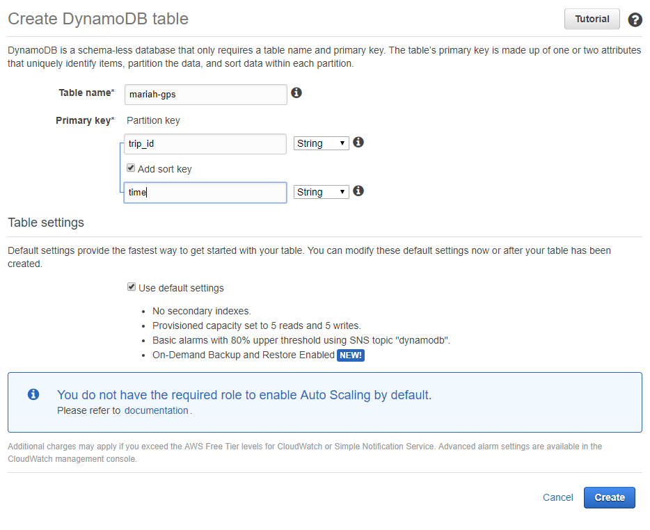
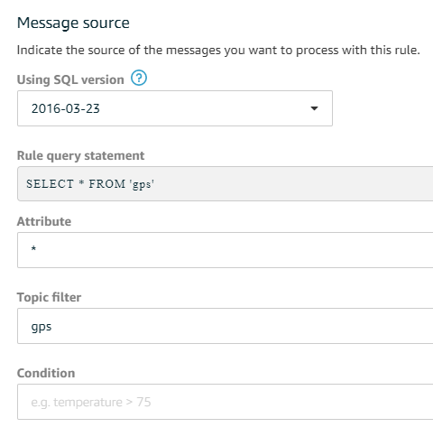

Building a Smart boat
Mariah
Last year, we bought a boat. She's old, and she's slow, but she floats and sails and that's pretty cool. There's not much to ole Mariah, but the guy that sold her to us included a solar panel to charge cell phones and power a small lamp, and that idea of owning something and making it your own to solve a problem put a little tickle in the back of my head. I knew that I wanted to make this boat my own, but I wasn't sure how.
I think most people would take an old boat and gut the interior, give her some fresh varnish, or do some other cosmetic project. Mariah needs all of that, but I wanted to do something that I hadn't seen anyone else do before. I was going to give her a brain.
Building a Smart Boat: Location Services
The first thing a smart boat should do is let you know where it is.
Materials
- [ ] Raspberry Pi
- [ ] Adafruit Ultimate GPS Breakout
- [ ] USB to TTL Cable
- [ ] Expansion Board (optional)
- [ ] Breadboard (optional)
- [ ] Hologram Nova Cellular Modem (optional)
Code
- [ ] mariah
Architecture
The base architecture of the project is pretty simple.
- A daemon will run on the Raspberry Pi, which will collect data from the different sensors (GPS only at this time).
- The Pi will be registered as an AWS IoT device, and will send data to the IoT service on a given interval.
- Using the IoT Rules Engine, the data will be replicated to DynamoDB
Use GPS with Raspberry Pi
The first thing you'll want to do (after basic Raspberry Pi installation) is to hook up the GPS board. You can find pretty good instructions on the Adafruit GPS guide
Before you begin- make sure that you solder the contacts to the GPS Breakout! The board won't work otherwise.
Go ahead and follow the guide's instructions to download the GPS daemon packages:
sudo apt-get install gpsd gpsd-clients python-gps
Once installed, you can start the daemon with
sudo gpsd /dev/ttyUSB0 -F /var/run/gpsd.sock
and test that you've got GPS fix with
cgps -s
Raspberry Pi GPS with NodeJS
I'm a big NodeJS fan, so I've written my application with JS. Luckily, someone's already done the heavy lifting and has created node-gpsd.
Install the package in your working directory with:
npm install --save node-gpsd
Here's how you configure a GPS Daemon/Listener in NodeJS:
// app.js
const gpsd = require('node-gpsd');
const daemon = new gpsd.Daemon({
program: 'gpsd',
device: '/dev/ttyUSB0',
port: 2947,
pid: '/tmp/gpsd.pid',
readOnly: false,
logger: {
info: function() {},
warn: console.warn,
error: console.error
}
});
const listener = new gpsd.Listener({
port: 2947,
hostname: 'localhost',
logger: {
info: function() {},
warn: console.lwarn,
error: console.error
},
parse: true
});
daemon.start(() => {
console.log('GPS Daemon started');
listener.connect(() => {
console.log('GPS Listener connected');
listener.watch();
listener.on('TPV', (e) => {
console.log('event:', e);
});
});
});
There are two objects being used here:
GPS Daemon - The daemon is what is actually interacting with the device, and polling it for changes. These changes get published to a local port.
GPS Listener - The listener is subscribed to events on that port, and trigger JavaScript events. This allows us to react to these new events.
Test It Out
Run the GPS service with node app. You should start to see different events logged to the console. Congratulations!
AWS IoT with Raspberry Pi
Now that we're pulling GPS data, we should put it somewhere. AWS IoT offers many different services that we can tap into.
Register an IoT Device
Navigate to the Onboard dashboard of the AWS IoT console and click 'Get Started'. From here, follow the steps to download a package of certificates for your device. Copy the certs to your Raspberry Pi- I've got mine in my application folder (mariah/certs).
Next, we'll add some code to connect to the IoT Cloud. Install the AWS IoT SDK for node:
npm install --save aws-iot-device-sdk
And change your app.js to look like this:
// app.js
const config = require('./config.js');
const gpsd = require('node-gpsd');
const deviceModule = require('aws-iot-device-sdk').device;
const daemon = new gpsd.Daemon({
program: 'gpsd',
device: '/dev/ttyUSB0',
port: 2947,
pid: '/tmp/gpsd.pid',
readOnly: false,
logger: {
info: function() {},
warn: console.warn,
error: console.error
}
});
const listener = new gpsd.Listener({
port: 2947,
hostname: 'localhost',
logger: {
info: function() {},
warn: console.lwarn,
error: console.error
},
parse: true
});
const device = deviceModule({
keyPath: config.iot.keyPath,
certPath: config.iot.certPath,
caPath: config.iot.caPath,
region: config.aws.region,
host: config.iot.host
});
daemon.start(() => {
console.log('GPS Daemon started');
listener.connect(() => {
console.log('GPS Listener connected');
listener.watch();
listener.on('TPV', (e) => {
e.trip_id = 'trip_1';
console.log('event:', e);
device.publish('gps', JSON.stringify(e));
});
});
});
All I've done here is declare a 'device', which requires the location of the certs that we transferred over to the Pi earlier. Once declared, we can use it to publish to the cloud: that's what this line is:
device.publish('gps', JSON.stringify(e));
where gps is a topic that we can act on once we get into the AWS IoT Rules Engine, and we're publishing our JSON from the GPS module as a string.
Test it Out
To test that this is working, go to the Test tab of the AWS IoT console and subscribe to the gps topic.
Go back to your Pi, and run node app again. If everything is configured correctly, you should see data start to stream in.
Using the IoT Rules Engine
Data is flowing to the cloud like a firehose- now you need to put it somewhere. The AWS IoT Rules Engine allows you to use a SQL-like language to parse messages on the fly and act on them. Before we jump in though, we're going to need somewhere to dump them.
Configure a DynamoDB Table
Configure a DynamoDB table to hold the data. Setup is simple:
- Table name:
mariah-gps - Partition key:
trip_idString - Sort key:
timeString - Table settings: use default settings
Configuring IoT Rules Engine
Now, go back to the IoT Rules console and create a new rule.
- Name:
mariah_gps_rule - Message source:
- Attribute:
* - Topic filter:
gps - Condition: blank
- Attribute:
- Actions:
- Split message into multiple columns of a database
- Table name:
mariah-gps - Iam role name: Create a new role
- Table name:
- Split message into multiple columns of a database
Test it Out
Go back to your app and run it again with node app. Open up your DynamoDB table, and you should see it populated with data.
Next Steps
Now that you've got location data up into the Cloud, you're free to do whatever you want with it. I'm writing a Lambda function to gather data by trip ID and mash it together into geoJSON- a format that will allow me to plot the trip out onto a map.